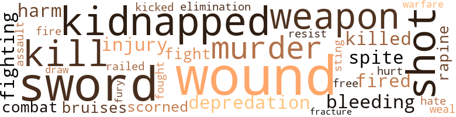
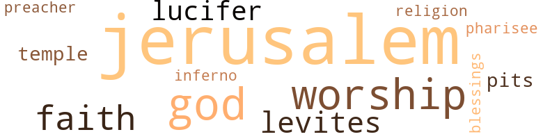

From Jerusalem to Jericho, by Gholson, Edward (1943)
6 music-related terms matched in this text.
Most frequent terms in this topic: rap (1); medley (1); song (1); section (1); line (1)
chorus.n.01
Definition: any utterance produced simultaneously by a group
| word | sentence |
|---|---|
| chorus | Coming a little closer still , he heard a great chorus of voices . |
medley.n.01
Definition: a musical composition consisting of a series of songs or other musical pieces from various sources
| word | sentence |
|---|---|
| medley | It was a veritable medley of a great throng apparently charmed by some prevailing idea or object . |
rap.n.05
Definition: genre of African-American music of the 1980s and 1990s in which rhyming lyrics are chanted to a musical accompaniment; several forms of rap have emerged
| word | sentence |
|---|---|
| rap | Presently there was a rap as though the robbers wanted to notify her that they were returning . |
section.n.01
Definition: a self-contained part of a larger composition (written or musical)
| word | sentence |
|---|---|
| section | The dead silence of this section and the fear hidden in their breasts made their tramp sound like the feet of frightened horses escaping from their captors . |
song.n.01
Definition: a short musical composition with words
| word | sentence |
|---|---|
| song | When the song was ended , Hiker spoke with suppressed but firm voice , " Strange phenomena ! |
tune.n.01
Definition: a succession of notes forming a distinctive sequence
| word | sentence |
|---|---|
| line | " Who art thou , " said he to the next in line . |
97 violence-related terms matched in this text.
Most frequent terms in this topic: wounds (11); shot (6); sword (6); kidnapped (6); kill (5)
bleeding.n.01
Definition: the flow of blood from a ruptured blood vessel
| word | sentence |
|---|---|
| bleeding | Winding and twisting , sweating and bleeding , they made their way , led by Jacob Swartz . |
| bleeding | The wounded were still lying bleeding on all highways leading to the city of Jericho . |
| bleeding | After hours of bleeding and suffering , writhing and groaning , occasionally nervously snatching himself at the rending roar of roving lions in quest of prey but keeping from the road on account of the noise of ratling chariots , a Samaritan came along . |
brawl.n.02
Definition: a noisy fight in a crowd
| word | sentence |
|---|---|
| free-for-all | The annual festival of Jerusalem which was soon to be held brought pilgrims from all parts of the country to witness the event , and here the everyday custom of local restraint was virtually abandoned for a plan of free-for-all friends . |
bruise.n.01
Definition: an injury that doesn't break the skin but results in some discoloration
| word | sentence |
|---|---|
| bruises | The beauties which he was already beholding amply paid him for all the hazards and hindrances and wounds and bruises which he had received on his journey . |
| bruises | Others succeeded in making the journey , but not without wounds and bruises and scars which hindered their progress and often forced a halt to their travel for many months and sometimes years ; many died on the way . |
contemn.v.01
Definition: look down on with disdain
| word | sentence |
|---|---|
| scorned | When he related his new idea , his mother approved , but his father scorned it as fantastic and impossible . |
| scorned | Some laughed at him , some scorned him , others pitied him . |
depredation.n.01
Definition: an act of plundering and pillaging and marauding
| word | sentence |
|---|---|
| depredations | Watchmen had been sent out from Jerusalem to scour the country in search of the robbers and murderers who already before the specified incident of the tragedy of Hiker had to their discredit a long list of depredations . |
| depredation | When they finally reached the city , the prisoners were lodged in the dungeons to resume their habitat with their other companion before and after the fact of depredation and death . |
| depredations | On the morning of the trial of the four criminals , who had been guilty of so many depredations , Judge Penial Plez was on the bench . |
draw.v.23
Definition: pull (a person) apart with four horses tied to his extremities, so as to execute him
| word | sentence |
|---|---|
| draw | The man knitted his brow as though to draw up something which had lain dormant from the recesses of his mind . |
elimination.n.05
Definition: the murder of a competitor
| word | sentence |
|---|---|
| elimination | In the Black Valley where he had proclaimed his authority the problem of the elimination of the three kings who contested his right to rule had to be solved before he could erect his Inn . |
fight.n.02
Definition: the act of fighting; any contest or struggle
| word | sentence |
|---|---|
| fighting | She carried no sword and did no fighting . |
| fighting | I do not believe in fighting . |
| combat | Doctors in that country had been placed under special pledge not to engage in combat , the penalty of which was the revocation of their special privileges . |
| combat | There was but one thing for him to do : he must give up his special privileges to secure the right to combat . |
fight.v.02
Definition: fight against or resist strongly
| word | sentence |
|---|---|
| fought | Dr. Oneye had long been under suspicion for violation of such a pledge , but had not been charged with the offense due to the furtive way in which he fought . |
| fight | With these he was not to fight and no one was to fight him , but once his license was given up he became subject to the common rules of the country . |
| fight | With these he was not to fight and no one was to fight him , but once his license was given up he became subject to the common rules of the country . |
| fighting | She was grim-faced like a soldier defeated in battle but still fighting for victory . |
fracture.n.01
Definition: breaking of hard tissue such as bone
| word | sentence |
|---|---|
| fracture | The bone in his leg broken by the robber 's javelin showed no signs of injury save the scar which was left and the limb shortened by knitting of the fracture . |
fury.n.01
Definition: a feeling of intense anger
| word | sentence |
|---|---|
| fury | Fire in all of its characteristic fury , with the gluttony of hungry lions , licking the dry lumber into smoke and ashes . |
hate.n.01
Definition: the emotion of intense dislike; a feeling of dislike so strong that it demands action
| word | sentence |
|---|---|
| hate | Her heart seemed to break wide open , torn between fear , trouble , and hate . |
injury.n.01
Definition: any physical damage to the body caused by violence or accident or fracture etc.
| word | sentence |
|---|---|
| harm | She meant no harm . |
| harm | As a result the change may bring me to double grief , that of actual harm and that which comes from the lack of anticipation . " |
| injury | Down , down , down , down , they walked and slipped and fell and somersaulted ; but without serious injury , always landing upon their feet . |
| injury | By their agility and speed they were able to ward off serious injury for some distance up the Wilderness Road . |
| harm | Constant , beholding the plight of her husband , swooned and fell by his side ; for no harm had been directed at her . |
| injury | The bone in his leg broken by the robber 's javelin showed no signs of injury save the scar which was left and the limb shortened by knitting of the fracture . |
kick_back.v.02
Definition: spring back, as from a forceful thrust
| word | sentence |
|---|---|
| kicked | The robbers were weak ; with swords and javelins they kicked the door wide open and charged but were met by the overpowering strength of the watchmen . |
kidnap.v.01
Definition: take away to an undisclosed location against their will and usually in order to extract a ransom
| word | sentence |
|---|---|
| kidnapped | Were she still available , there was little she could tell because of the peculiar circumstances under which she had been kidnapped and under which she had made her escape . |
| kidnapped | In this place were the men who had stricken down Paul Hiker and kidnapped his wife and otherwise caused much suffering and many hearts to bleed . |
| kidnapped | He had lost his wife who had been kidnapped by these same robbers on the Wilderness Road . |
| kidnapped | In other words , while Hiker had escaped and his kidnapped wife had rescued herself from the clutches of the murderers , the general situation in the country remained fundamentally the same . |
| kidnapped | The robbers quickly gathered about them , robbed Paul and kidnapped Constant . |
| kidnapped | I was kidnapped and taken to their hide-out not far from the Wilderness Road . |
kill.v.10
Definition: cause the death of, without intention
| word | sentence |
|---|---|
| kill | The watchmen threatened to kill him unless he led them to the place . |
| kill | She would tell them she saw a whopping cobra which she tried to kill but was not able to find an appropriate weapon of destruction in sufficient time to do so , and that he got away . |
| kill | When she entered the door , apparently panting for breath , she began to tell of seeing a big snake at the spring that she tried to kill , but let him get away in spite of her efforts . |
| kill | Do you mean that you are going to kill me ? " |
| kill | " Mother , " said she , wiping the briny tears from her bloodshot eyes , " when we reached the danger point on our journey , murderers who lay in ambush accosted us , and when we failed to halt at their command they threw swords and javelins to kill us . |
| killed | While he had not killed Paul instantly , he had no faith in the possibility of his ever escaping from the Wilderness Road . |
| killed | Convinced in her mind that he was the man , for she had noticed in the cave the unusual contour of his head , she turned to the watchman and said , " That 's the man who killed my husband on the Wilderness Road ! |
| killed | " This man killed my husband ! |
malice.n.01
Definition: feeling a need to see others suffer
| word | sentence |
|---|---|
| spite | Assuming and presuming that she was more beautiful than the rest of the girls , and possessing similarly more convincing speech and persuasive diction , her face flushed with hope of success in spite of the knowledge of the others ' failure . |
| spite | In spite of her present difficulties she could not restrain her mind from reflection upon the Law of Consequences . |
| spite | When she entered the door , apparently panting for breath , she began to tell of seeing a big snake at the spring that she tried to kill , but let him get away in spite of her efforts . |
murder.n.01
Definition: unlawful premeditated killing of a human being by a human being
| word | sentence |
|---|---|
| murder | They must find a clue to the location of the haunt which had made the Wilderness Road a proverb of murder and rapine . |
| murders | Many murders had been attributed to them but they were to be tried for robbing Paul Hiker . |
| murder | When the daring and thrill of a life of murder and rapine wore off , the murderers abandoned that life and Jacob Swartz went back to Jerusalem with the papers that he had found in Paul 's pocket in the hope of securing the job which Paul had left . |
| murder | He did not know the divine injunction that " murder will out . '' |
open_fire.v.01
Definition: start firing a weapon
| word | sentence |
|---|---|
| fire | No sooner had he arrived before the judge than the attorney began to fire questions at him . |
| fired | " You are charged with striking down Paul Hiker on the Wilderness Road and rifling his pockets from which you took papers of Leave of Absence , " fired the attorney . |
| fired | Not able to get her to answer any of the questions , the psychiatrist had become by now both disgusted and exhausted and fired at her a final blanket question , which was not in reality asking anything : " Did you do it ? " |
| fired | When he had read it to the traveler and placed it back in his pocket with the expectation of doing the same thing over again , he fired a question at the charioteer and waited for an answer . |
pain.v.02
Definition: cause emotional anguish or make miserable
| word | sentence |
|---|---|
| hurt | " I would not even touch a strand of the disheveled hair on your uncombed head if I thought it would hurt thee . |
rape.n.02
Definition: the act of despoiling a country in warfare
| word | sentence |
|---|---|
| rapine | They must find a clue to the location of the haunt which had made the Wilderness Road a proverb of murder and rapine . |
| rapine | When the daring and thrill of a life of murder and rapine wore off , the murderers abandoned that life and Jacob Swartz went back to Jerusalem with the papers that he had found in Paul 's pocket in the hope of securing the job which Paul had left . |
rape.n.03
Definition: the crime of forcing a woman to submit to sexual intercourse against her will
| word | sentence |
|---|---|
| assault | With the absence of these two witnesses , it was difficult to convict these thieves and murderers for anything except assault and robbery and this could not have been done except for the fact that the goods were found on them and the previous identification of Jacob Swartz by Mrs. Hiker , now Mrs. Lazerus . |
resist.v.04
Definition: withstand the force of something
| word | sentence |
|---|---|
| resist | Having captured him so completely , he no longer had the courage to resist and indicated his assent by saying , " Very well . |
shoot.v.02
Definition: kill by firing a missile
| word | sentence |
|---|---|
| shot | " By authority of the grim reapers of this frightful place , " shot back the watchman . |
| shot | Constant quickly shot back . |
| shot | " Not guilty , " shot back Jacob Swartz , the man who was the brains of the whole lot of criminal machinery . |
| shot | " But why cross the bridge before you are there ? " shot back William . |
| shot | " Must have , " shot back another . |
| shot | " Constant ? " shot back her mother inquiringly . |
sting.n.03
Definition: a painful wound caused by the thrust of an insect's stinger into skin
| word | sentence |
|---|---|
| sting | In fact , it was impossible for him to see it unless and until he plunged into it and felt the sting of its fangs . |
sword.n.01
Definition: a cutting or thrusting weapon that has a long metal blade and a hilt with a hand guard
| word | sentence |
|---|---|
| swords | The robbers were weak ; with swords and javelins they kicked the door wide open and charged but were met by the overpowering strength of the watchmen . |
| sword | It was Fate and he drew his sword from its scabbard and , pointing it at Paul , demanded him to be gone . |
| sword | She carried no sword and did no fighting . |
| sword | But Fate , unsheathing his sword and pointing it threateningly at him , demanded him to hike it . |
| sword | He began his flight and in his haste he would occasionally cast an intermittent eye back , only to see the sword brandishing furiously . |
| sword | I have never carried a sword . |
| swords | Hardly had these sonorous voices struck their ears than swords and javelins began to fly thick and fast and fall around them . |
| swords | " Mother , " said she , wiping the briny tears from her bloodshot eyes , " when we reached the danger point on our journey , murderers who lay in ambush accosted us , and when we failed to halt at their command they threw swords and javelins to kill us . |
| sword | Give me a sword ! |
vilify.v.01
Definition: spread negative information about
| word | sentence |
|---|---|
| railed | He thinks he 's smart , " she railed . |
wale.n.01
Definition: a raised mark on the skin (as produced by the blow of a whip); characteristic of many allergic reactions
| word | sentence |
|---|---|
| weal | Many times the Companions of Fortune had changed his way and weal . |
war.n.03
Definition: an active struggle between competing entities
| word | sentence |
|---|---|
| warfare | But , " said he , " I need more than the weapons of carnal warfare . |
weapon.n.01
Definition: any instrument or instrumentality used in fighting or hunting
| word | sentence |
|---|---|
| weapons | The reason for this pledge was obvious : Doctors had certain professional advantages which other men did not have and carried weapons . |
| weapons | While the doctor had given up his special privileges he hid not relinquished his special weapons . |
| weapons | He was trying to make up his mind what kind of weapons he would need in making the journey and how he could secure them . |
| weapon | She would tell them she saw a whopping cobra which she tried to kill but was not able to find an appropriate weapon of destruction in sufficient time to do so , and that he got away . |
| weapons | But , " said he , " I need more than the weapons of carnal warfare . |
wound.n.01
Definition: an injury to living tissue (especially an injury involving a cut or break in the skin)
| word | sentence |
|---|---|
| wounds | Thinking that he had undergone a lapse of memory of some sort , due perhaps to the wounds which he had received , the psychiatrist asked him to relate some of the events of his past life . |
| wounds | He remembered his limp form and how he took from his kit a cruse of oil and washed his wounds and set him on his beast and delivered him to the Inn at Mercyville . |
| wounds | His wounds healed , though limping from the fractured bone in his leg , he climbed the hill that led back by Mercyville and into the Wilderness Road . |
| wounds | The beauties which he was already beholding amply paid him for all the hazards and hindrances and wounds and bruises which he had received on his journey . |
| wounds | " He said he picked him up and washed his wounds with oil which had been made by thieves who infested that road , and carried him to Mercyville . " |
| wounds | There in addition to the serious wounds which he had received at the hands of the robbers , he had lost all his possessions . |
| wounds | The chief of ail doctors had found the wounded man , washed his wounds , transported him to an Inn , paid the price of his cure , demanded his release from the law , and bade him continue his journey to Jericho . |
| wounds | Others succeeded in making the journey , but not without wounds and bruises and scars which hindered their progress and often forced a halt to their travel for many months and sometimes years ; many died on the way . |
| wounds | The Samaritan opened his traveling kit and extracted from it a cruse of oil with which he washed the blood from the man 's wounds . |
| wounds | Going back to his kit , he pulled from it a roll of bandages - for he was prepared for such emergencies - and bound up the open wounds to stop the flow of blood . |
| wounds | Eventually his wounds began to heal , his temperature subsided . |
| wound | The wound over his heart had now almost healed up . |
88 religion-related terms matched in this text.
Most frequent terms in this topic: Jerusalem (40); worship (10); gods (7); faith (7); Levites (5)
blessing.n.05
Definition: the act of praying for divine protection
| word | sentence |
|---|---|
| blessings | Snugly located in an institution for which he had made only scholastic preparation and ever remembering the friendly advice of the president , he set about to repay luck for the blessings of his good fortune . |
god.n.03
Definition: a man of such superior qualities that he seems like a deity to other people
| word | sentence |
|---|---|
| God | But for the mercy of a Good Samaritan who chanced to come along at that time on his way to worship his God in the mountains of Ephraim , the wounded man would have perished in his blood along the highway . |
| gods | Almost exhausted , as he neared his home after many hours of the most strenuous travel , he began a rebuke to the gods of Fate . |
| gods | He had led the gods of Fortune in a fatal attack upon my hopes and aspirations and nothing was left for me to do but to return home , to beat a hasty retreat to my birth place . |
| God | He said , ' God is a spirit and they who worship him in spirit could find him anywhere . ' |
| Gods | Make friends with the Gods of Fortune and maybe they can be induced to pilot you along the road you have set yourself to travel . " |
| gods | There was hope in her breast that the gods of fate would come to her rescue . |
| gods | I 'll leave this hell hole and trust to the gods to deliver me back to the Wilderness Road . " |
| God | This was the highway along which many priests and Levites traveled , going to and fro from Jerusalem to Jericho , to lead the people into the worship of God . |
| gods | Either by instinct or accident or by the inaudible voice of the gods , she took the direction which led back to Jerusalem . |
| gods | What she would have done had she known it was kept a secret of the gods . |
| gods | But the gods decreed otherwise and I must endure it . " |
| god | The Samaritan like the priests and Levites was on his way to worship , to pay homage to his god , though he was not bound by tradition or social strata and could find his god and pay him homage , relieve suffering in whatever class , wherever he chose to do so . |
hell.n.01
Definition: any place of pain and turmoil
| word | sentence |
|---|---|
| inferno | I have not seen the gaping inferno of which you speak , but I do know that this sector of the Wilderness Road is infested with many hazards ; venomous beasts , ferocious animals , monstrous men having the bodies of men , and heads of deadly vipers lurk in these parts . |
hell.n.03
Definition: (Christianity) the abode of Satan and the forces of evil; where sinners suffer eternal punishment; - John Milton; ; -Dr. Johnson
| word | sentence |
|---|---|
| pits | Along this road which you now travel - have chosen and must travel - are many quagmires , pits of despondency , valleys of doubt , cobra-headed men , monstrous men impossible to describe , beasts of many species , geographical disorders ; but between these are interspersed many tall mountains , and it shall be my task to point out to you on the crests of these mountains , the glories of the city to which you travel , which one can see only when looking from their peaks . " |
| pits | " I shall rob you of the joy which Life gives you and carry you to the quagmires , pits of despondency , dangerous stretches of this highway , as you travel . |
jerusalem.n.01
Definition: capital and largest city of the modern state of Israel (although its status as capital is disputed); it was captured from Jordan in 1967 in the Six Day War; a holy city for Jews and Christians and Muslims; was the capital of an ancient kingdom
| word | sentence |
|---|---|
| Jerusalem | ONCE upon a time there was a certain man who traveled from Jerusalem to Jericho . |
| Jerusalem | DURING the long period of delay before the coming of the psychiatrist to test and determine the cause of the victim 's mental queerness and his hypothetical incrimination by Dr. H. Drunkard Oneye , the watchmen of Jerusalem were making an exhaustive investigation of the robbery tipped off by Constant Hiker who was now in the city and who had already been the instigation of the arrest of one of the confederates . |
| Jerusalem | Watchmen had been sent out from Jerusalem to scour the country in search of the robbers and murderers who already before the specified incident of the tragedy of Hiker had to their discredit a long list of depredations . |
| Jerusalem | They had made for a long time most perilous the Wilderness Road which led from Jerusalem to Jericho . |
| Jerusalem | Operating upon the theory that , like the one already in the dungeon at Jerusalem , the gang had broken ranks and scattered into all parts of the country under aliases , they began their efforts . |
| Jerusalem | After months of searching into every nook and corner of the populous areas of the land and , being unable to find the robbers or any trace of them , they returned to headquarters at Jerusalem and reported to the chief watchman . |
| Jerusalem | They were finally led back into the Wilderness Road and headed for Jerusalem . |
| Jerusalem | During the months intervening from the time the robbers were arrested and taken to Jerusalem , it was decided by the watchmen to send them to the Black Valley for trial . |
| Jerusalem | Early one morning they were chained and brought forth to make the long trek from Jerusalem to Mercyville . |
| Jerusalem | They were hurried through the streets of Jerusalem and entered the Wilderness Road for the long trek to the place of their trial . |
| Jerusalem | Meanwhile Constant Hiker , who was now in Jerusalem , having lost interest in the past so far as her crucial experiences were concerned , decided again to become a matrimonial adventuress . |
| Jerusalem | The annual festival of Jerusalem which was soon to be held brought pilgrims from all parts of the country to witness the event , and here the everyday custom of local restraint was virtually abandoned for a plan of free-for-all friends . |
| Jerusalem | Milling about , looking for the exquisite sights of Jerusalem , Lazerus followed always in close proximity . |
| Jerusalem | I came from Jerusalem and am on my way to Jericho . " |
| Jerusalem | They worship in the mountains of Samaria , and we worship at Jerusalem . " |
| Jerusalem | " I am told that a Great Teacher came through Jerusalem some years ago and told the people that it was not absolutely necessary to go either to Jerusalem or Samaria to worship God . |
| Jerusalem | " I am told that a Great Teacher came through Jerusalem some years ago and told the people that it was not absolutely necessary to go either to Jerusalem or Samaria to worship God . |
| Jerusalem | " We are from Jerusalem . |
| Jerusalem | He was only out from Jerusalem a few hours when the complexion of things about him changed . |
| Jerusalem | " I took it off the prisoner who now stands at the bar - Morris Kobar - when we searched them in Jerusalem , " concluded the watchman . |
| Jerusalem | " When we examined the prisoners in Jerusalem , I found this photo in his pockets , " displaying the photo as he spoke . |
| Jerusalem | " I am from Jerusalem . |
| Jerusalem | Either by accident or necessity men made it the chief highway from Jerusalem to Jericho . |
| Jerusalem | " Delightful , certainly , " said Paul , " and it pains me to realize that I must refuse all these social associations ; but when I left Jerusalem I had then only enough time to make the city of Jericho and the only way for me to make it now is by increased pace sufficient to cover the hours of my delay . |
| Jerusalem | And so he wandered about the city of Jerusalem when he had time off from his work in the Cedar establishment or from the school which he attended during the day . |
| Jerusalem | Rushing away from the road for fear of the appearance of the watchman - for they had been outlawed in the city of Jerusalem and a price had been put on their heads - they refixed themselves and their victim and hurried off to their cave . |
| Jerusalem | This was the highway along which many priests and Levites traveled , going to and fro from Jerusalem to Jericho , to lead the people into the worship of God . |
| Jerusalem | She had entered the Wilderness Road just below where Paul had been stricken down on the side next to Jerusalem . |
| Jerusalem | Either by instinct or accident or by the inaudible voice of the gods , she took the direction which led back to Jerusalem . |
| Jerusalem | A charioteer was making his way back from Jericho to Jerusalem . |
| Jerusalem | The chariot moved off toward Jerusalem . |
| Jerusalem | But her vows died with the death of the sorrow which filled her heart in the hour of her tragedy ; for it was not a great while after that she left home again to go up to Jerusalem . |
| Jerusalem | Upon Paul 's return to Jerusalem he was to resume his job of selling oil . |
| Jerusalem | When the daring and thrill of a life of murder and rapine wore off , the murderers abandoned that life and Jacob Swartz went back to Jerusalem with the papers that he had found in Paul 's pocket in the hope of securing the job which Paul had left . |
| Jerusalem | He turned up in Jerusalem as a man from Jericho looking for work , but patiently bided his time . |
| Jerusalem | The dangers of the Wilderness Road were well known in Jerusalem . |
| Jerusalem | Finally a charioteer came into Jerusalem directly from Jericho and stopped at Mercyville to refresh himself . |
| Jerusalem | But with the backing of the faith which he had in his mother , he had soon packed his scant belongings and was off - determined to secure the equipment necessary to travel the perilous road from Jerusalem to Jericho . |
| Jerusalem | Jerusalem was not a great distance away . |
| Jerusalem | When he had entered the president 's office of this noted institution , the venerable president listened philosophically to his apparently fantastic story of mental confusion over his equipment for the journey over the Wilderness Road from Jerusalem to Jericho . |
levite.n.01
Definition: a member of the Hebrew tribe of Levi (especially the branch that provided male assistants to the temple priests)
| word | sentence |
|---|---|
| Levites | The priests and Levites were the logical men , if only he could get them to stop . |
| Levites | This was the highway along which many priests and Levites traveled , going to and fro from Jerusalem to Jericho , to lead the people into the worship of God . |
| Levites | WHILE the wounded man lay upon the ground writhing helplessly in the blood of his suffering , many priests and Levites who could have helped him passed by with rapid pace ; some only stopping long enough to convince themselves that he was still alive . |
| Levites | The Samaritan like the priests and Levites was on his way to worship , to pay homage to his god , though he was not bound by tradition or social strata and could find his god and pay him homage , relieve suffering in whatever class , wherever he chose to do so . |
| Levites | The hum of the chariots of the priests and Levites could be heard in the distance but this was of no avail to the wounded man ; some had passed and all likely would . |
pharisee.n.02
Definition: a member of an ancient Jewish sect noted for strict obedience to Jewish traditions
| word | sentence |
|---|---|
| Pharisee | Had he been a Pharisee , the incident would never have happened . |
preacher.n.01
Definition: someone whose occupation is preaching the gospel
| word | sentence |
|---|---|
| preacher | He was a reader of the Book of Books ; he was in fact a preacher . |
religion.n.01
Definition: a strong belief in a supernatural power or powers that control human destiny
| word | sentence |
|---|---|
| religion | They are different in religion . |
| faith | Their faith is different from ours . |
| faith | Confirmed in his faith by the firm but tender voice of his mother , he exclaimed as he primed himself for the journey , " I 'll do it . |
| faith | " My task is to turn faith into doubt and to create suspicion between man and man , to impugn honest motives , to inspire nations to build great battleships , to mobilize great armies , to engage in wars and rumors of wars , and to turn back the clock of human progress . |
| faith | But with the backing of the faith which he had in his mother , he had soon packed his scant belongings and was off - determined to secure the equipment necessary to travel the perilous road from Jerusalem to Jericho . |
| faith | While he had not killed Paul instantly , he had no faith in the possibility of his ever escaping from the Wilderness Road . |
| faith | She was determined to make certain her doubt or to confirm her faith . |
| faith | By politico-religious faith he was perhaps a publican . |
satan.n.01
Definition: (Judeo-Christian and Islamic religions) chief spirit of evil and adversary of God; tempter of mankind; master of Hell
| word | sentence |
|---|---|
| Lucifer | " Three kings rule in this valley , " he continued , " and all in the same kingdom - they are King Lucifer , King Law , and King Death . |
| Lucifer | While good Dr. Samaritan had proclaimed his authority over the Black Valley , it was still being challenged by Lucifer , Death , and the Law . |
| Lucifer | King Lucifer with dangling allurements was on the right , having already let loose his atmospheric artillery . |
| Lucifer | By the strength of his will , he executed the law , ripped the sickle from the hands of Death , wrapped it around Lucifer , and threw them back into the Black Valley . |
temple.n.03
Definition: an edifice devoted to special or exalted purposes
| word | sentence |
|---|---|
| temple | When the sun was only a few hours high , she approached the marvelous temple and began to climb the steps which led to its various courts . |
| temples | Dorcas pulled down the bottle of camphor from the medicine chest and rubbed her mother 's temples . |
worship.n.01
Definition: the activity of worshipping
| word | sentence |
|---|---|
| worship | But for the mercy of a Good Samaritan who chanced to come along at that time on his way to worship his God in the mountains of Ephraim , the wounded man would have perished in his blood along the highway . |
| worship | They do not worship our God ; neither do we worship their God . |
| worship | They do not worship our God ; neither do we worship their God . |
| worship | They worship in the mountains of Samaria , and we worship at Jerusalem . " |
| worship | They worship in the mountains of Samaria , and we worship at Jerusalem . " |
| worship | " I am told that a Great Teacher came through Jerusalem some years ago and told the people that it was not absolutely necessary to go either to Jerusalem or Samaria to worship God . |
| worship | He said , ' God is a spirit and they who worship him in spirit could find him anywhere . ' |
| worship | Do you see its graduated courts of homage with its priests and high priests calling the world to worship ? " |
| worship | This was the highway along which many priests and Levites traveled , going to and fro from Jerusalem to Jericho , to lead the people into the worship of God . |
| Worship | Worship to them was ' much more important than service . |
| worship | The Samaritan like the priests and Levites was on his way to worship , to pay homage to his god , though he was not bound by tradition or social strata and could find his god and pay him homage , relieve suffering in whatever class , wherever he chose to do so . |